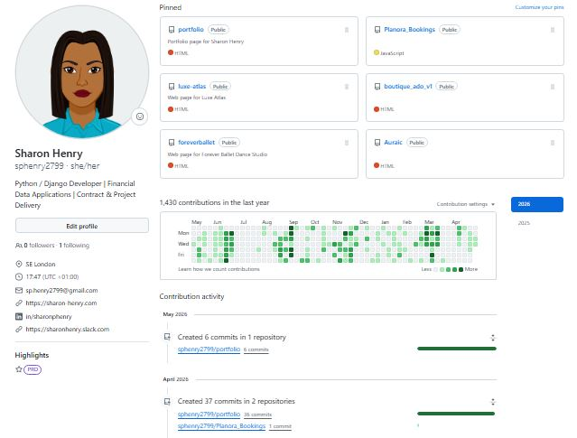

About Me
Professional Profile
Highly analytical and tech-focused Professional with 15+ years of domain experience within global Financial Institutions, now pivoting into FinTech Application & Production Support.
Experienced across derivatives, fixed income and equity products with an extensive understanding of front-to-back trade lifecycles, data workflows, and investment systems. Skilled at acting as a core liaison between front-office users (portfolio managers/traders) and engineering infrastructure groups to systematically resolve software bugs, system anomalies, and transaction latency issues.
Recently reinforced my technical capabilities by developing an automated engineering toolkit featuring Python, SQL database management, and API design to confidently monitor platform uptime and troubleshoot live operational infrastructure.
Currently seeking opportunities across Application Support, Production Support, Financial Systems Analysis, and Technical Client Operations.
Technical Toolkit
- Languages & Data: Python (Pandas, NumPy), SQL (PostgreSQL), Advanced MS Excel.
- Frameworks & APIs: Django, JavaScript, REST APIs (Stripe Integration).
- Tools & Operations: Jira, Git/GitHub, Agile/Scrum, Pytest, Incident Triage, Data Quality Validation, System Documentation.
Financial Markets Experience
- • Front-Office Operations: Active application and technical workflow support for fast-paced trading floor infrastructure.
- • Asset Classes: Direct exposure to Fixed Income, Equities, FX, and Derivatives.
- • Trade Lifecycle Architecture: Functional expertise investigating trade capture breaks, clearing blockages, regulatory settlements, and data reconciliations.
- • Reporting Governance: Engineering and validating high-fidelity client and cross-border regulatory investment data books.
PyVisuals: Financial Analytics Pipeline

Tech Stack: Python, Pandas, NumPy, Matplotlib, Seaborn, Bootstrap 5, Git, GitHub, VS Code.
• Engineered automated Python-based data pipelines to ingest, clean, and validate heavy financial datasets, completely eliminating manual spreadsheet errors.
• Isolated data execution anomalies and transformed them into clear, scannable data visualisations to drive rapid system diagnosis and resolution.
Key Strengths:
- • Application & Production Support
- • Relational Database Queries
- • System Diagnostics & Triage
- • Data Quality Assurance
- • Technical Problem Solving
- • Cross-Functional Communication
- • Incident Management & Monitoring
Data & Systems Projects

Auraic - Transaction & Payment Integration Engine (End-to-End Deployment)
Tech Stack: Python, Django, Stripe API, PostgreSQL, jQuery, Heroku
• Developed a web-based transactional platform requiring strict relational data validation layers and safe data transmission protocols.
• Designed and maintained PostgreSQL schemas to manage high-volume data exchange workflows while systematically ensuring zero processing latencies.

Planora - Resource Allocation & Scheduling System (Agile Deployed)
Tech Stack: Python, Django, PostgreSQL, Bootstrap 5, Pytest, Heroku.
• Engineered Django relational database models enforcing absolute data consistency under state-driven application logic.
• Optimised backend data-handling performance and minimized system delivery delays through automated batch-scheduling and strict verification logic.
Git Version Control

My GitHub portfolio demonstrates practical experience in database structure querying, script diagnostics, reporting automation, and custom tool debugging using Python and PostgreSQL.
Consistent hands-on deployment across server-side environments, tracking configuration issues, managing environmental variations, and refactoring applications for stability.
Active management of standard code repositories via Git, demonstrating clean issue triaging, version branching, pull-request logging, and thorough systems documentation.
Explore Code RepositoriesExperience
Trade Support & Front-Office Market Operations
Investment Banking Contracts | 2004 - 2008
• Provided immediate desk support loops for high-volume traders, triaging application failures and ensuring order-execution accuracy.
• Monitored front-to-back equity, fixed income, and derivative transaction lifecycles across external system clearing networks.
• Reconciled trade breaks under high-pressure parameters, rapidly resolving system settlement processing exceptions.
Financial Systems & Application Support Specialist
Institutional Asset Management Contracts | 2008 - Present
• Tracked critical upstream and downstream data flows to trace system anomalies, handle processing errors, and guarantee strict application validation layers.
• Acted as the primary functional bridge between front-office users (traders/portfolio managers) and deep technical engineering teams to isolate, articulate, and fix software logic faults.
• Collaborated with core platform engineers to monitor environment architecture stability, extract/evaluate system logs, and secure seamless real-time file delivery across production setups.
Technical Volunteer Projects
Technical Consultant Specialist | 2025 - 2026
SEDS Connective (Dec 2025 - Mar 2026)
• Overhauled a digital platform rollout by evaluating operational workflows, resolving environment dependencies, and translating distinct user requirements into structured technical logs.
thisisthegeneration.com (Oct - Nov 2025)
• Analysed reporting architecture problems, executing rigorous manual compatibility checks and verifying system integration updates to achieve transparent data presentation.
Education & Certificates
Education
Level 5 Diploma in Web Application Development
Code Institute (City of Bristol College) | Completed March 2026
Diploma focused on data-centric full-stack frameworks and Agile methodology.
Grade: Merit
Specialist Certificates
Level 2 Professional Certificate in Data Analysis Pass, 2024
Microsoft Excel Associate Certification (Microsoft 365) Score: 940/1000, 2024
Google AI Essentials Systems Course Completed Dec 2025
Level 2 Certificate in Digital Marketing Pass, 2023